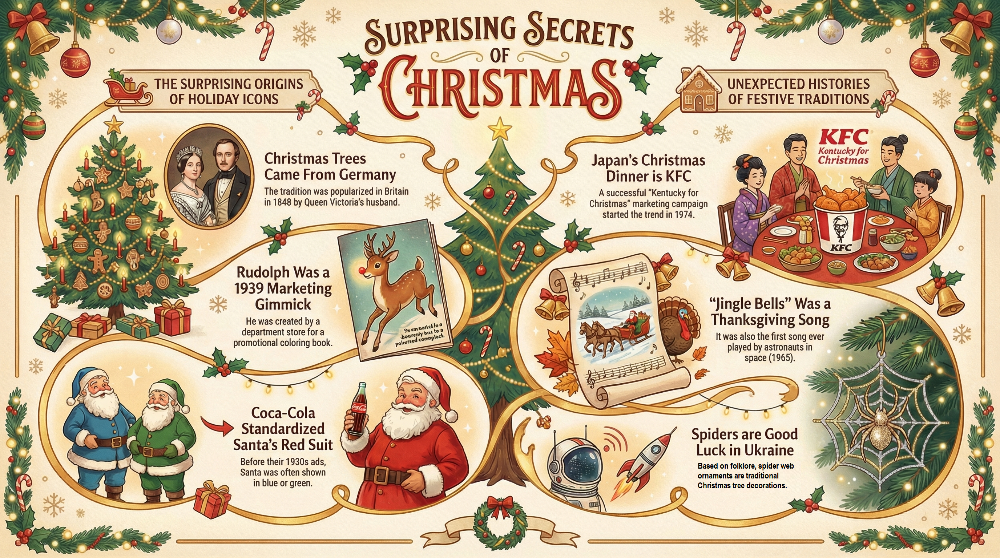

Surprising Secrets about Christmas

Choose Your Activity
How would you like to learn?
Select a difficulty level:
Listening Challenge
Listen closely to the Christmas facts!
12 Facts of Christmas
🎅 Trivia Flashcards 🎁
In which country did the Christmas tree tradition start in the 16th century?
The tradition started in Germany.
Who popularised the Christmas tree in the English-speaking world in 1848?
Prince Albert, the husband of Queen Victoria.
How did Prince Albert's Christmas tree at Windsor Castle become a famous tradition?
A drawing of the Royal Family around the tree was published in a newspaper.
What record does the song "Jingle Bells" hold in the context of space travel?
It was the first song ever played in space.
On December 16, 1965, astronauts on the _____ spaceship played "Jingle Bells".
Gemini 6
For which American holiday was the song "Jingle Bells" originally written?
It was originally written for American Thanksgiving.
Rudolph the Red-Nosed Reindeer was created in 1939 by a copywriter for which department store?
He was created for a department store called Montgomery Ward.
What was the original purpose for the creation of Rudolph the Red-Nosed Reindeer?
He was a promotion for a free colouring book given to children.
In the Greek language, the letter 'X' (Chi) is the first letter of what name?
Christ.
Using 'X' as an _____ for Christ is a religious tradition used by the church for hundreds of years.
abbreviation
In Japan, what is the most popular Christmas dinner?
The most popular Christmas dinner is Fried Chicken.
Which company's 1974 marketing campaign made fried chicken a Christmas tradition in Japan?
KFC's "Kentucky for Christmas" campaign.
According to legend, who dropped bags of gold down a chimney, leading to the stocking tradition?
St. Nicholas.
In the legend of St. Nicholas, what happened to the bags of gold he dropped down the chimney?
The gold fell into the girls' stockings, which were hanging by the fire to dry.
In which country are spider webs considered traditional Christmas decorations?
In Ukraine.
According to Ukrainian folklore, what does placing a spider ornament on a Christmas tree bring?
It is considered to bring good luck.
The story of the Ukrainian Christmas spider tells of a poor widow whose spider web-covered tree turned into _____ on Christmas morning.
gold
Who invented the first Christmas card in England in 1843?
A civil servant named Sir Henry Cole.
Why did Sir Henry Cole have the first Christmas card designed?
He was too busy to write individual letters to all his friends.
Which country sends a huge Christmas tree to London's Trafalgar Square every year?
Norway (specifically, the people of Oslo).
Why does Norway send a Christmas tree to the UK every year?
To say "thank you" for the UK's help during World War II.
Which company's advertising campaign in the 1930s was highly influential in popularising Santa's red suit?
Coca-Cola.
The artist _____ was hired by Coca-Cola to draw Santa in a red suit to match the brand's colours.
Haddon Sundblom
"What colours, other than red, was Santa often depicted wearing before the 1930s?"
"He was often drawn wearing green, brown, or blue."
"The song ""Silent Night"" was written in which country in 1818?"
It was written in Austria.
"Why was ""Silent Night"" originally written to be played on a guitar?"
The church organ was broken.
"""Silent Night"" holds the record for being the most _____ Christmas song in history."
recorded
"Christmas Crackers, invented by Tom Smith, are described as a very _____ tradition."
British
"What was the profession of Tom Smith, the inventor of Christmas Crackers?"
He was a sweet-maker.
What French confection inspired Tom Smith to create Christmas Crackers?
"He was inspired by ""bon-bons"" (sweets wrapped in paper)."
"Besides the 'bang', what other two items did Tom Smith add to his crackers?"
He added a paper hat and a bad joke.
Term: Folklore
Definition: Traditional stories and legends.
Term: Abbreviation
Definition: A shortened form of a word.
Term: Chimney
Definition: A pipe on the roof that lets smoke escape from a fire.
Term: Widow
Definition: A woman whose husband has died.
Term: Civil Servant
Definition: A person who works for the government.
Term: Organ
"Definition: A large musical instrument with keys and pipes, often found in churches."